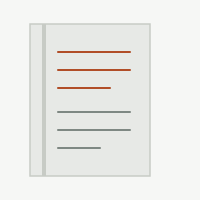

Entry one
Rebuilding this site, with an AI doing the typing
The meta post: why this site moved from a WordPress trial back to a plain static site on GitHub and Cloudflare, and what it's like documenting a build like this as it happens.